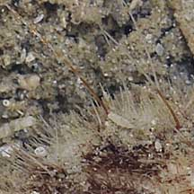
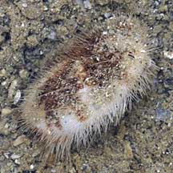
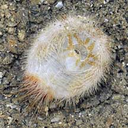

|
|
| echinoids text index | photo index |
| Phylum Echinodermata > Class Echinodea > heart urchins |
| Tiny
maretia heart urchin Maretia planulata* Family Maretiidae updated Jan 2020 Where seen? Small ones are sometimes seen on Pulau Semakau, in sandy areas of the coral rubble area.According to Lane, were collected subtidally at Pulau Semakau by dredging. Other larger ones are sometimes seen on Pulau Sekudu, usually only their skeletons and seldom, living ones. Features: About 2cm, body oval mostly white. The sparse long spines directed backwards and are banded orange and white, while there are more white short spines. The petaloid is brownish with brownish patches on the upperside. On the underside, there is a pale orange patten of five petals around the mouth. |
 Pulau Semakau, Feb 09 |
 A few long banded spines, many more short spines. |
 This one seemed to have popped out of the sand, leaving a hole of the same shape. |
 Side view. |
 Underside. |
*ID needs confirmation.
| Tiny maretia heart urchins on Singapore shores |
On wildsingapore
flickr
|
| Other sightings on Singapore shores |
Links
|